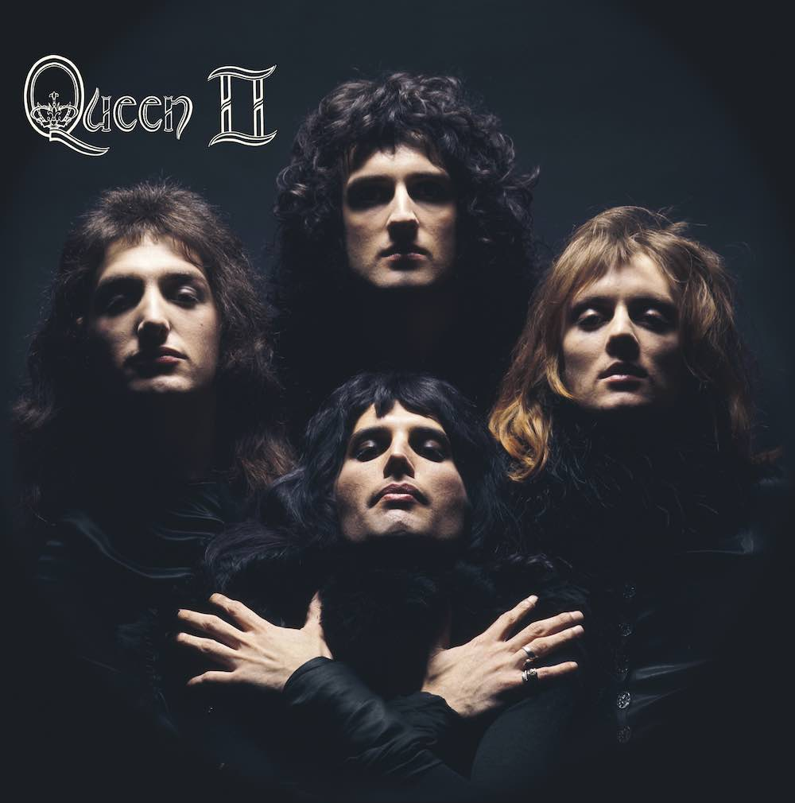

Categoría: Rock
Descubre lo mejor del mundo del rock en DUOMUSIC.

El rock es un amplio género de música popular originado a principios de la década de 1950 en Estados Unidos y que derivaría en un gran rango de diferentes estilos a mediados de los años 1960 y posteriores, particularmente en ese país y Reino Unido. Tiene sus raíces en el rock and roll de los años 50, estilo nacido directamente de géneros como el blues, el rhythm and blues (pertenecientes a la música afroamericana) y el country. También se nutrió fuertemente del blues eléctrico y el folk, además de incorporar influencias del jazz y la música clásica, entre otras fuentes. Instrumentalmente, el rock se ha centrado en la guitarra eléctrica, en general como parte de un grupo integrado por batería, bajo, uno o más cantantes y, algunas veces, instrumentos de teclado como el órgano y el piano. Usualmente, se basa en canciones en compás de 4/4 y una estructura verso-estribillo, sin embargo, el género se ha vuelto extremadamente diverso y las características comunes son difíciles de definir. Como la música pop, las letras se centran a menudo en el amor romántico, pero también tratan un amplio rango de otros temas con un enfoque frecuente en lo social, lo personal y lo político.
Descubre los principales exponentes del rock

